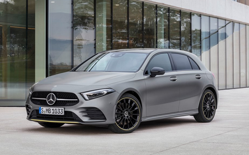
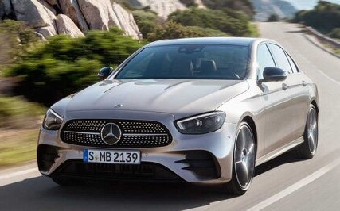
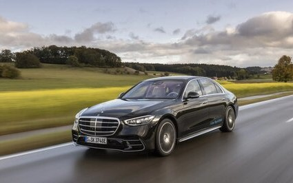

|  |
The A-CLASS
|
 |
The C-CLASS
|
|  |
The E-CLASS مرسيدس بنز الفئة-E هي سيارة فاخرة متوسطة الحجم تم إنتاجها منذ عام 1953. إنها واحدة من خطوط طرازات مرسيدس الأكثر شهرة والأكثر مبيعًا، وهي متوفرة كسيارات سيدان وكوبيه وكابريوليه وواغن. |
|  |
The S-CLASS تعتبر سيارة مرسيدس-بنز الفئة-S هي سيارة السيدان الفاخرة كاملة الحجم الرائدة للعلامة التجارية والتي تم إنتاجها منذ عام 1972. ويُنظر إليها على نطاق واسع على أنها واحدة من أكثر السيارات المرموقة والمتقدمة تقنيًا وذات التصميم الهندسي الجيد في العالم. |